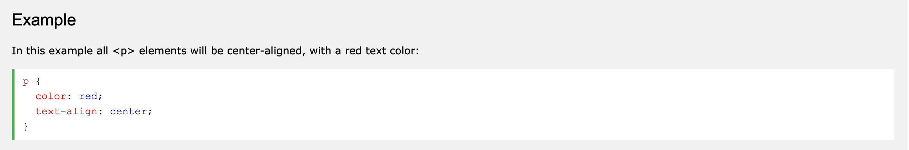

A CSS rule-set consists of a selector and a declaration block.The selector points to the HTML element you want to style. The declaration block contains one or more declarations separated by semicolons. Each declaration includes a CSS property name and a value, separated by a colon. Multiple CSS declarations are separated with semicolons, and declaration blocks are surrounded by curly braces.

CSS is a language that describes the style of an HTML document. CSS describes how HTML elements should be displayed. This tutorial will teach you CSS from basic to advanced.